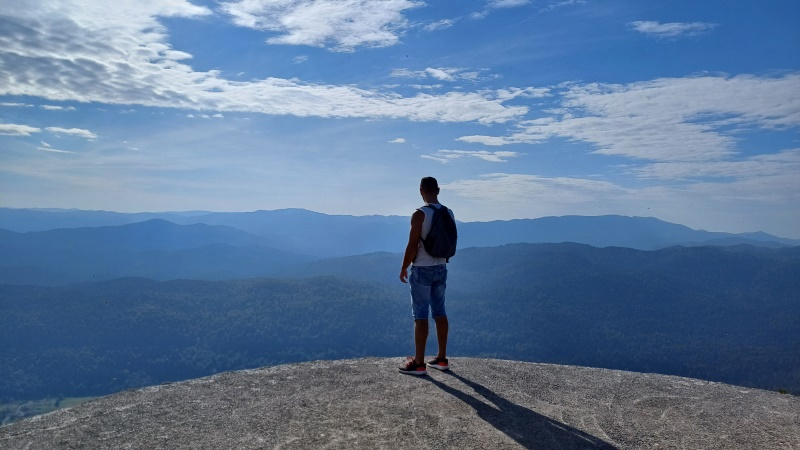
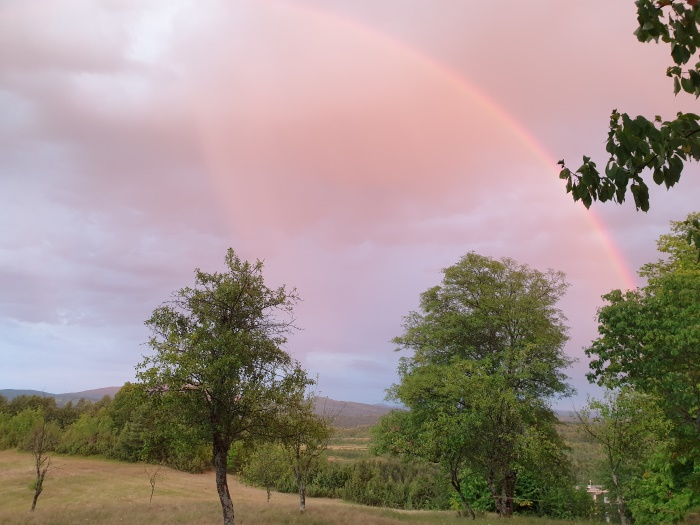
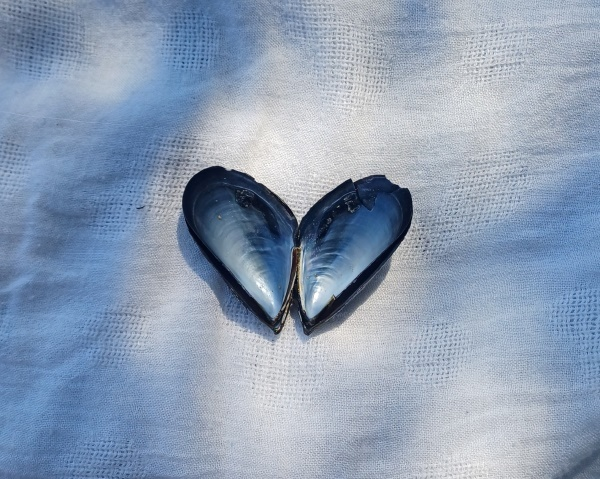
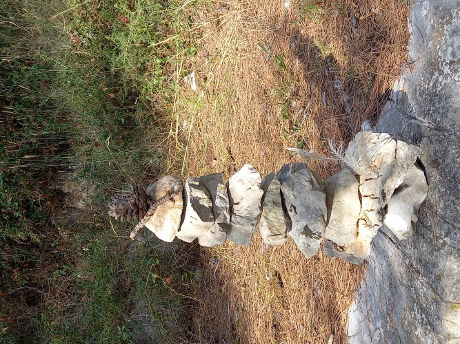

Usluge
Individualizirani pristup Vašim potrebama i ciljevima

Životni ciljevi, navike i karijera
- Definiranje i razrada planova za postizanje kratkoročnih i dugoročnih ciljeva u bilo kojoj domeni života
- Pronalazak životne svrhe i željenog smjera u životu
- Razvoj strategija za rješavanje problema i donošenje važnih životnih odluka
- Profesionalno usmjeravanje i savjetovanje o karijeri
- Razvoj vještina prezentacije na tržištu rada (izrada životopisa i profila na društvenim mrežama te priprema za razgovore za posao)
- Razvoj navika za poboljšanje zdravlja i dobrobiti (nošenje sa stresom, organizacija vremena, prehrana, tjelovježba, spavanje, briga o sebi)
- Usavršavanje strategija za održavanje dugoročne motivacije i ustrajnosti

Navigiranje životnih promjena i tranzicija
- Podrška tijekom zahtjevnih životnih promjena i događaja (poput bolesti, raskida veza i odnosa, promjena karijere, gubitaka i slično, bilo vlastitih ili onih koje prolaze bliske osobe)
- Procesiranje događaja, emocija i razmišljanja
- Prepoznavanje novih mogućnosti unutar postojećih okolnosti
- Razvoj otpornosti i novih načina prilagodbe u novonastaloj situaciji

Osobni razvoj i bolje upoznavanje sebe
- Prepoznavanje i razumijevanje vlastitih unutarnjih prepreka, ograničavajućih obrazaca razmišljanja i nepoželjnih ponašanja
- Razumijevanje uzroka i uzročno-posljedičnih veza kod različitih životnih ishoda (zašto se nešto događa)
- Promjena i optimizacija unutarnjeg dijaloga, načina razmišljanja i obrazaca ponašanja
- Razumijevanje vlastitih emocija i razvoj efikasnih načina nošenja s njima
- Razvoj komunikacijskih vještina s ciljem poboljšanja međuljudskih odnosa i povećanja vjerojatnosti za uspjeh
- Prepoznavanje vlastitih vrijednosti (što nam je u životu najvažnije) kao glavnih smjernica za autentičan i ispunjen život

Podrška u duhovno-energetskom radu
Znanost je zadnjih desetljeća počela povezivati duhovna učenja sa znanstveno dokazanim principima i konceptima. Jeste li ikada pomislili:
- Što točno znači prosvjetljenje? Kako ga postići?
- Kako da podignem svoju vibracijsku razinu trajno i u potpunosti?
- Što sve točno uključuje manifestacija? Koji su koraci i kako da manifestiram ono što želim?
- Kako da koristim afirmacije? Trudim se razmišljati pozitivno, ali se ništa ne mijenja.
- Meditacija jednostavno nije za mene. Što da radim umjesto toga?
- Jako upijam i osjećam emocije drugih ljudi oko sebe. Kako da se zaštitim?
- Što je točno ego i zašto se ponekad aktivira?
- Kako da razvijem svoju intuiciju? Čini se da ona nekada radi, a nekada ne.
- Jesu li energije s kojima radim (ili se susrećem) pozitivne? Kako da znam prepoznati razliku?
Ovo su samo neka od pitanja koja se mogu javiti na putu osobnog duhovnog razvoja. Ako se osjećate kao da ste "zapeli" na nekom od koraka svog puta, ovdje sam da vam pomognem. Kroz svoje vlastito iskustvo i metode rada, naučila sam spojiti "neopipljive" koncepte duhovnosti s praktičnim tehnikama i alatima koje ću vrlo rado podijeliti s vama. Često je vrlo malo potrebno kako bismo dalje mogli nastaviti sami. Za to može biti potreban samo jedan susret ili više njih, a što u potpunosti ovisi o vama, vašim potrebama i željama.
Energetsko iscjeljivanje - Reiki Holly Fire III
Reiki je nježan, ali iznimno snažan oblik energetskog iscjeljivanja, poznat po svojim duboko pročišćavajućim, njegujućim i transformativnim svojstvima. Djeluje tako da aktivira prirodnu sposobnost tijela da se vrati u stanje ravnoteže, otpusti napetost i stvori dublji osjećaj unutarnjeg mira. Pomaže da se povežemo sa svojom unutarnjom snagom, jasnoćom i smjerom, bez forsiranja i uvijek u skladu s našim vlastitim ritmom. S obzirom na to, može vam pomoći ako:
- tražite emocionalno olakšanje, uzemljenje ili smirenje
- osjećate preopterećenost, stres ili energetsku iscrpljenost
- želite se ponovno povezati sa sobom i svojom intuicijom
- prolazite kroz životne promjene ili procese iscjeljivanja
- trebate podršku u otpuštanju starih obrazaca ili emocionalnih blokada
- želite podići svoju vibraciju i osjećati se usklađenije
Budući da je Reiki sam po sebi inteligentna energija, on uvijek djeluje onako kako je u tom trenutku najbolje za vas. Može vam pomoći da se osjećate opuštenije i odmornije, ili donijeti duboke pomake upravo u područjima u kojima ste spremni za promjenu.